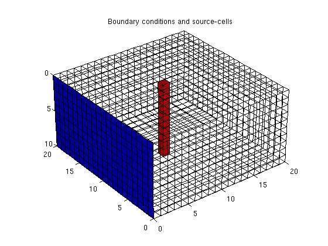
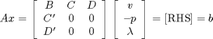
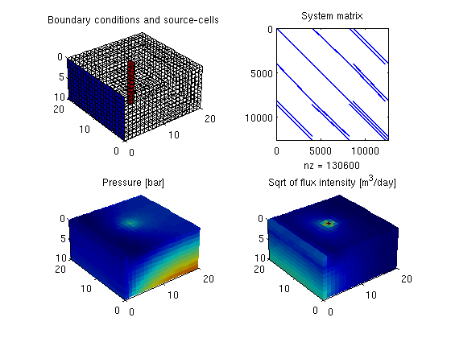

How to Specify Sources and Boundary Conditions
This example shows how to set up a combination of source and boundary conditions and is a continuation of two previous examples, the basic flow-solver tutorial and the gravity column example.
Contents
Define grid, rock and fluid data
Construct a Cartesian grid of size nx-by-ny-by-nz cells, where each cell has dimension 1-by-1-by-1 m. Set an isotropic and homogeneous permeability of 100 mD, a fluid viscosity of 1 cP and a fluid density of 1000 kg/m^3.
nx = 20; ny = 20; nz = 10; G = cartGrid([nx, ny, nz]); G = computeGeometry(G); rock.perm = repmat(100 * milli*darcy, [G.cells.num, 1]); fluid = initSingleFluid('mu' , 1*centi*poise , ... 'rho', 1014*kilogram/meter^3); gravity reset on
Add sources and boundary conditions
The simplest way to model inflow or outflow from the reservoir is to use a fluid source/sink. Here we specify a source with flux rate of 1m^3/day in each grid cell.
c = (nx/2*ny+nx/2 : nx*ny : nx*ny*nz) .'; src = addSource([], c, ones(size(c)) ./ day()); display(src);
src =
cell: [10x1 double]
rate: [10x1 double]
sat: []
Our flow solvers automatically assume no-flow conditions on all outer (and inner) boundaries; other types of boundary conditions need to be specified explicitly. Here we impose a Dirichlet boundary condition of p=10 bar at the global left-hand side of the model. For a single-phase flow, we do not need to specify fluid saturation at the boundary and the last argument is therefor left empty.
bc = pside([], G, 'LEFT', 10*barsa());
To check that boundary conditions and sources are placed at the correct location, we plot the model.
subplot(2,2,1), pos = get(gca,'Position'); clf plotGrid(G, 'FaceColor', 'none'); plotGrid(G, c, 'FaceColor', 'r'); plotFaces(G, bc.face, 'b'); title('Boundary conditions and source-cells') view(3), camproj perspective, axis tight equal, camlight headlight h = gca;
Construct and solve the linear system
Construct mimetic pressure linear system components for the system Ax = b

based on input grid and rock properties. For more details of the linear system, see the basic tutorial example.
S = computeMimeticIP(G, rock, 'Verbose', true);
Using inner product: 'ip_simple'. Computing cell inner products ... Elapsed time is 0.352238 seconds. Assembling global inner product matrix ... Elapsed time is 0.003974 seconds.
Compute the solution for the system with sources and boundary conditions
rSol = initResSol(G, 0); rSol = solveIncompFlow(rSol, G, S, fluid, 'MatrixOutput', true, ... 'src', src, 'bc', bc);
Plot output
We convert the cell pressure to unit bar and the fluxes to unit m^3/day when plotting the results. Although it is not strictly necessary here, we show how to make shorthands to simplify the plotting.
cellNo = rldecode(1:G.cells.num, diff(G.cells.facePos), 2) .'; plot_var = @(x) plotCellData(G, x); plot_pres = @(x) plot_var(convertTo(x.pressure(1:G.cells.num), barsa())); plot_flux = @(x) plot_var(accumarray(cellNo, ... abs(convertTo(faceFlux2cellFlux(G, x.flux), meter^3/day)))); set(h,'Position',pos); % move first plot to subplot(2,2,1); subplot(2,2,2) spy(rSol.A) title('System matrix') subplot(2,2,3) plot_pres(rSol); title('Pressure [bar]') view(3), camproj perspective, axis tight equal, camlight headlight subplot(2,2,4) plot_flux(rSol); title('Sqrt of flux intensity [m^3/day]') view(3), camproj perspective, axis tight equal, camlight headlight